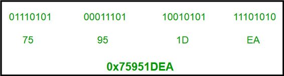
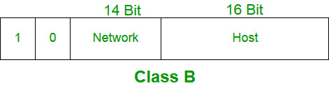
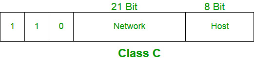

IP address is an address having information about how to reach a specific host, especially outside the LAN. An IP address is a 32 bit unique address having an address space of 232.
Generally, there are two notations in which IP address is written, dotted decimal notation and hexadecimal notation.
Dotted Decimal Notation

Hexadecimal Notation

{kind=link}
Some points to be noted about dotted decimal notation :
1. The value of any segment (byte) is between 0 and 255 (both included).
2. There are no zeroes preceding the value in any segment (054 is wrong, 54 is correct).
Classful Addressing
The 32 bit IP address is divided into five sub-classes. These are:
- Class A
- Class B
- Class C
- Class D
- Class E
Each of these classes has a valid range of IP addresses. Classes D and E are reserved for multicast and experimental purposes respectively. The order of bits in the first octet determine the classes of IP address.
IPv4 address is divided into two parts:
- Network ID
- Host ID
The class of IP address is used to determine the bits used for network ID and host ID and the number of total networks and hosts possible in that particular class. Each ISP or network administrator assigns IP address to each device that is connected to its network.
{kind=link}
Note: IP addresses are globally managed by Internet Assigned Numbers Authority(IANA) and regional Internet registries(RIR).
Note: While finding the total number of host IP addresses, 2 IP addresses are not counted and are therefore, decreased from the total count because the first IP address of any network is the network number and whereas the last IP address is reserved for broadcast IP.
Class A:
IP address belonging to class A are assigned to the networks that contain a large number of hosts.
- The network ID is 8 bits long.
- The host ID is 24 bits long.
The higher order bits of the first octet in class A is always set to 0. The remaining 7 bits in first octet are used to determine network ID. The 24 bits of host ID are used to determine the host in any network. The default sub-net mask for class A is 255.x.x.x. Therefore, class A has a total of:
- 2^7 – 2 = 126 network ID
- 2^24 – 2 = 16,777,214 host ID
IP addresses belonging to class A ranges from 1.x.x.x – 126.x.x.x

Class B:
IP address belonging to class B are assigned to the networks that ranges from medium-sized to large-sized networks.
- The network ID is 16 bits long.
- The host ID is 16 bits long.
The higher order bits of the first octet of IP addresses of class B are always set to 10. The remaining 14 bits are used to determine network ID. The 16 bits of host ID is used to determine the host in any network. The default sub-net mask for class B is 255.255.x.x. Class B has a total of:
- 2^14 = 16384 network address
- 2^16 – 2 = 65534 host address
- The network ID is 24 bits long.
- The host ID is 8 bits long.
- 2^21 = 2097152 network address
- 2^8 – 2 = 254 host address
- Within any network, the host ID must be unique to that network.
- Host ID in which all bits are set to 0 cannot be assigned because this host ID is used to represent the network ID of the IP address.
- Host ID in which all bits are set to 1 cannot be assigned because this host ID is reserved as a broadcast address to send packets to all the hosts present on that particular network.
- The network ID cannot start with 127 because 127 belongs to class A address and is reserved for internal loop-back functions.
- All bits of network ID set to 1 are reserved for use as an IP broadcast address and therefore, cannot be used.
- All bits of network ID set to 0 are used to denote a specific host on the local network and are not routed and therefore, aren’t used.
-
IP addresses belonging to class B ranges from 128.0.x.x – 191.255.x.x.

{kind=link}
Class C:
IP address belonging to class C are assigned to small-sized networks.
The higher order bits of the first octet of IP addresses of class C are always set to 110. The remaining 21 bits are used to determine network ID. The 8 bits of host ID is used to determine the host in any network. The default sub-net mask for class C is 255.255.255.x. Class C has a total of:
IP addresses belonging to class C ranges from 192.0.0.x – 223.255.255.x.

{kind=link}
Class D:
IP address belonging to class D are reserved for multi-casting. The higher order bits of the first octet of IP addresses belonging to class D are always set to 1110. The remaining bits are for the address that interested hosts recognize.
Class D does not posses any sub-net mask. IP addresses belonging to class D ranges from 224.0.0.0 – 239.255.255.255.

Class E:
IP addresses belonging to class E are reserved for experimental and research purposes. IP addresses of class E ranges from 240.0.0.0 – 255.255.255.254. This class doesn’t have any sub-net mask. The higher order bits of first octet of class E are always set to 1111.

Range of special IP addresses:
169.254.0.0 – 169.254.0.16 : Link local addresses
127.0.0.0 – 127.0.0.8 : Loop-back addresses
0.0.0.0 – 0.0.0.8 : used to communicate within the current network.
Rules for assigning Host ID:
Host ID’s are used to identify a host within a network. The host ID are assigned based on the following rules:
Rules for assigning Network ID:
Hosts that are located on the same physical network are identified by the network ID, as all host on the same physical network are assigned the same network ID. The network ID is assigned based on the following rules:
Summary of Classful addressing :

Problems with Classful Addressing:
The problem with this classful addressing method is that millions of class A address are wasted, many of the class B address are wasted, whereas, number of addresses available in class C is so small that it cannot cater the needs of organizations. Class D addresses are used for multicast routing, and are therefore available as a single block only. Class E addresses are reserved.
Since there are these problems, Classful networking was replaced by Classless Inter-Domain Routing (CIDR) in 1993. We will be discussing Classless addressing in next post.
References:
https://en.wikipedia.org/wiki/Classful_network
TechNet – Microsoft
Classful network – Wikipedia